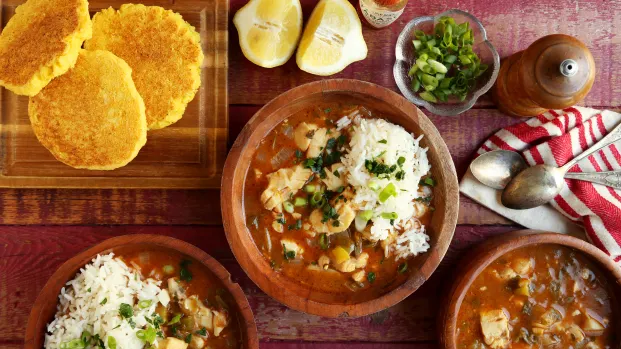
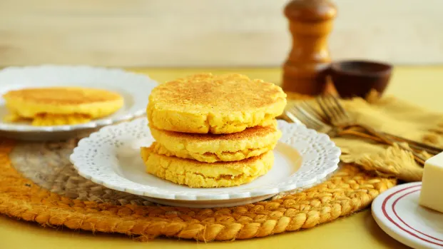

Redfish Courtbouillon
Galveston, Texas, is a port city on a barrier island with many beaches, and fish and seafood have always been integral to the local foodways. The enslaved peoples of the region who cooked would have prepared fish dishes, as well as fished and foraged for themselves and their families to supplement food rations. Redfish is the main local fish of this area, and this recipe puts it to good use along with spices from neighboring Louisiana.
Dale's Red Pickled Eggs

This crimson, Scottish family-fave is perfect for the uniquely American Juneteenth lineup. Southern foodways have strong Scottish influences. Black culinary professionals excelled at pickling, curing and preserving foods, and are credited with adding the secret ingredient (pickle juice!) to American-style deviled eggs—a staple at Black family gatherings. This is a fun, color-appropriate alternative.
Corn Pone
For centuries, doughs made from corn meal rations mixed with salt, hot water and/or rendered fat, have been made into pones. Pones—also known as ash cakes, hoe cakes or “johnny” cakes, so named for the ease with which they can be taken on a “journey”—are cooked directly over hot coals, making them the simplest form of cornbread that enslaved and emancipated people would have made. Ideally, corn pone is a supplement to other dishes.